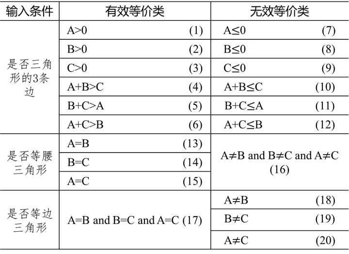
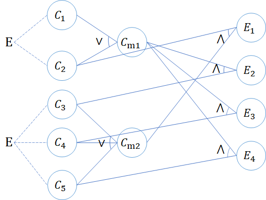
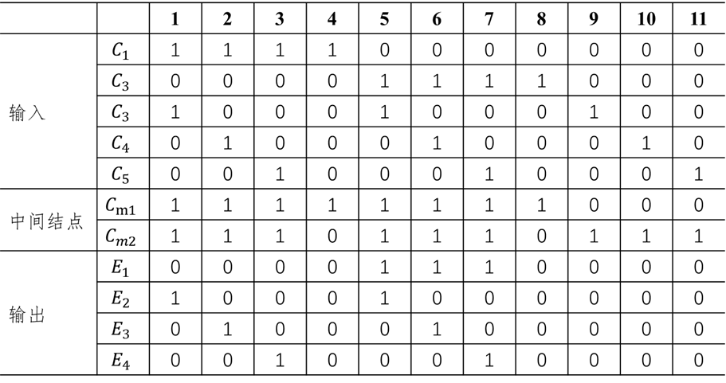
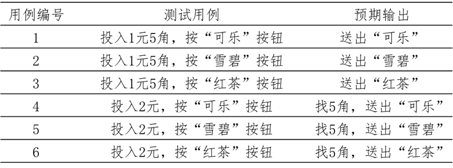
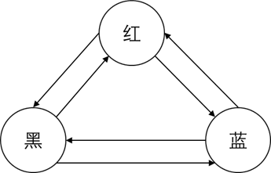
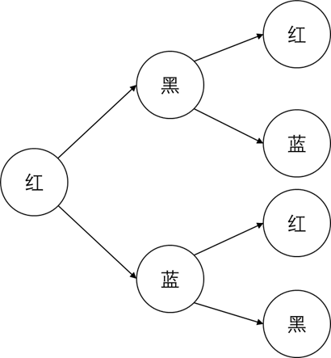

黑盒测试
[TOC]
黑盒测试法把程序看作一个黑盒子，完全不考虑程序的内部结构和处理过程。
测试方法主要有等价类划分法、边界值分析法、因果图法和功能图法。
等价类划分法
定义
等价类划分法不考虑程序的内部结构，把所有可能的输入数据划分成若干个子集，然后从每一个子集中选取少数具有代表性的数据作为测试用例。
等价类：某个输入域的子集合。
有效等价类：指对于程序的规格说明书来说合理的、有意义的输入数据构成的集合，可检验程序是否实现了规格说明书中所规定的功能和性能。
无效等价类：与有效等价类相反，即不符合需求规格说明书。
确定等价类的原则
- 在输入条件规定了取值范围或值的个数的情况下可以确定一个有效等价类和两个无效等价类；
- 在输入条件规定了输入值的集合或规定了”必须如何“的情况下可以确定一个有效等价类和一个无效等价类；
- 在输入条件是一个布尔量的情况下可以确定一个有效等价类和一个无效等价类；
- 在规定了输入数据的一组值（n 个）并且程序要对每个输入值分别处理的情况下可以确定 n 个有效等价类和一个无效等价类；
- 在规定了输入数据必须遵守的规则的情况下可以确定一个有效等价类（符合规则）和若干个无效等价类（从不同角度违反规则）；
- 在确知已划分的等价类中各元素在程序处理中的方式不同的情况下应将该等价类进一步划分。
确立了等价类之后建立等价类表，如下表所示：
| 输入条件 | 有效等价类 | 无效等价类 | 输入条件 | 有效等价类 | 无效等价类 |
|---|---|---|---|---|---|
| … | … | … | … | … | … |
设计测试用例
从划分的等价类中按以下 $3$ 个原则设计测试用例：
- 每一个等价类规定一个唯一的编号；
- 设计一个新的测试用例，使其尽可能多地覆盖尚未被覆盖的有效等价类，然后重复该步骤，直到所有的有效等价类都被覆盖；
- 设计一个新的测试用例，使其仅覆盖一个尚未被覆盖的无效等价类，重复该步骤直到所有无效等价类被覆盖。
【例题】
根据下面给出的规格说明，利用等价类划分的方法给出足够的测试用例。
”一个程序读入 3 个数，把这 3 个数值看作一个三角形的 3 条边的长度值。这个程序要打印出信息，说明这个程序是不等边的、是等腰的还是等边的。“
设三角形的 $3$ 条边分别为 $A,B,C$。
如果它们能构成三角形的 $3$ 条边，必须满足 $A>0,B>0,C>0,$且 $A+B>C,B+C>A,A+C>B$。
如果是等腰的，还要判断 $A=B$ 或 $B=C$ 或 $A=C$。
如果是等边的，则需判断 $A=B$ 且 $B=C$ 且 $A=C$。
列出等价类表，如下：

设计测试用例，输入顺序是【A,B,C】，如下表：
| 用例编号 | 【A,B,C】 | 覆盖等价类 | 输出 |
|---|---|---|---|
| 1 | 【3，4，5】 | 1，2，3，4，5，6 | 一般三角形 |
| 2 | 【0，1，2】 | 7 | 不构成三角形 |
| 3 | 【1，0，2】 | 8 | 不构成三角形 |
| 4 | 【1，2，0】 | 9 | 不构成三角形 |
| 5 | 【1，2，3】 | 10 | 不构成三角形 |
| 6 | 【1，3，2】 | 11 | 不构成三角形 |
| 7 | 【3，1，2】 | 12 | 不构成三角形 |
| 8 | 【3，3，4】 | 1，2，3，4，5，6，13 | 等腰三角形 |
| 9 | 【3，4，4】 | 1，2，3，4，5，6，14 | 等腰三角形 |
| 10 | 【3，4，3】 | 1，2，3，4，5，6，15 | 等腰三角形 |
| 11 | 【3，4，5】 | 1，2，3，4，5，6，16 | 非等腰三角形 |
| 12 | 【3，3，3】 | 1，2，3，4，5，6，17 | 等边三角形 |
| 13 | 【3，4，4】 | 1，2，3，4，5，6，14，18 | 非等边三角形 |
| 14 | 【3，4，3】 | 1，2，3，4，5，6，15，19 | 非等边三角形 |
| 15 | 【3，3，4】 | 1，2，3，4，5，6，13，20 | 非等边三角形 |
边界值分析法
定义
边界值分析法是对等价类划分法的补充。
大量的测试实践经验表明，边界值是最容易出现问题的地方，也是测试的重点。
边界条件
普通边界条件在产品说明书中有定义，或者在使用软件的过程中确定。
次边界条件
有些边界条件在软件内部，最终用户几乎看不到，但是软件测试仍有必要检查，这样的边界条件称为次边界条件或者内部边界条件。
常见的次边界条件是 ASCII 字符表，如果测试进行文本输入或文本转换的软件，在定义数据区间包含哪些值时可以参考以下，具体见附录。
另一种明显的软件缺陷是当软件要求输入时，用户不是没有输入正确信息，而是根本没有输入任何内容，只按了 Enter 键。这种情况需要特殊处理，不能将它们与合法情况和非法情况混合在一起。
边界值的选择
对边界值设计测试用例应遵循的原则：
- 如果输入条件规定了值的范围，则应取到刚达到这个范围的边界的值，以及刚刚超过范围边界的值作为测试输入数据；
- 如果输入条件规定了值的个数，则用最大个数、最小个数、比最小个数少 1，比最大个数多 1 的数作为测试数据；
- 根据规格说明的每个输出条件使用前面的原则；
- 如果程序的规格说明给出的输入域或输出域是有序集合，则应选取集合的第一个元素和最后一个元素作为测试用例；
- 如果程序中使用了一个内部数据结构，则应当选择这个内部数据结构边界上的值作为测试用例；
- 分析规格说明，找出其他可能的边界条件。
因果图法
定义
因果图（Cause-effect diagram）（又名鱼骨图）法是从用自然语言书写的程序规格说明的描述中找出输入条件与输出或程序状态的改变，通过因果图转换成判定表。
前面的等价类划分法和边界值分析法都是着重考虑输入条件，并没有考虑到输入情况的各种组合，而因果图法考虑描述多种条件的组合相应地产生多个动作的形式来设计测试用例。
设计方法
利用因果图导出测试用例的步骤：
（1）分析程序规格说明的描述中哪些是原因，哪些是结果。原因常常是输入条件或输入条件的等价类，而结果是输出条件；
（2）分析程序规格说明的描述中语义的内容，并将其表示成连接各个原因与各个结果的”因果图“；
（3）标明约束条件；
（4）为判定表中每一列表示的情况设计测试用例。
通常，在因果图中用 $C_i$ 表示原因、用 $E_i$ 表示结果，其基本符号如下图所示：


约束符号如下：
- $E$（互斥）

- $I$（包含）

- $O$（唯一）

- $R$（要求）

- $M$（屏蔽）

实例
【例题】
有一个处理单价为 1 元 5 角钱的盒装饮料的自动售货机软件。若投入 1 元 5 角硬币，按下”可乐“”雪碧“或”红茶“按钮，相应的饮料就送出来。若投入的是 2 元硬币，在送出饮料的同时退还 5 角硬币。
列出原因和结果：

确定原因与结果的逻辑关系，需要中间状态：
$C_{m1}$：已投币
$C_{m2}$：已按钮
设计因果图：

转换为决策表，每一列可作为确定测试用例的依据。

设计乘法器测试用例（等价类划分）：

功能图法
定义
程序的功能说明通常由动态说明和静态说明组成.动态说明描述了输入数据的次序或转移的次序，静态说明描述了输入条件与输出条件之间的对应关系。
功能图方法是用功能图形象地表示程序的功能说明，并机械地生成功能图的测试用例。
功能图模型由状态迁移图和逻辑功能模型构成。
- 状态迁移图：由输入数据和当前状态，决定输出数据和后续状态。
- 逻辑功能模型：表示在状态中输入条件和输出条件之间的对应关系。逻辑功能模型只适合描述静态说明，输出数据仅由输入数据决定。
设计方法
功能图实际上是一种黑盒、白盒混合用例的设计方法。
逻辑覆盖和路径测试属于白盒测试的内容。
逻辑覆盖是以程序内部的逻辑结构为基础的测试用例设计方法，由于覆盖测试的目标不同，逻辑覆盖可分为语句覆盖、判定覆盖、判定—条件覆盖、条件组合覆盖、路径覆盖。
状态迁移图导出测试用例的步骤：
（1）明确状态节点：分析被测对象的特性及需求规格说明书，明确被测对象的状态节点数量及相互迁移关系；
（2）绘制状态迁移图：圆圈表示状态节点，有向箭头表示状态间的迁移关系，根据需要在箭头旁标识迁移条件；
（3）绘制状态迁移树：根据状态迁移图，按照广度优先和深度优先搜索绘制状态迁移树。首先确定起始节点和终止节点，在绘制时，当路径上遇到终止节点时，不再扩展，遇到已经出现的节点也停止扩展；
（4）抽取测试路径设计用例：根据绘制好的状态迁移树，提取测试路径，从左到右，横向抽取，每条路径构成一条测试规则，然后再利用等价类和边界值等测试用例设计方法设计具体的测试用例。
实例
一个编辑文本的软件中有可以改变字体颜色的功能，其中可选的颜色共有黑、红、蓝三种颜色。
想要测试这个功能，首先，分析上述需求可以得出，该功能共有三种状态，假设红色为起始状态，那么可以得到如下的状态迁移图：

根据上述的状态迁移图，绘制出如下的状态迁移树：

从状态迁移树中，可以导出以下规则：
| 编号 | 路径 |
|---|---|
| 1 | 红$\rightarrow$黑$\rightarrow$红 |
| 2 | 红$\rightarrow$黑$\rightarrow$蓝 |
| 3 | 红$\rightarrow$蓝$\rightarrow$红 |
| 4 | 红$\rightarrow$蓝$\rightarrow$黑 |
最终，根据以上测试用例规则，可以导出如下测试用例：
| 用例编号 | 测试项目 | 标题 | 预期结果 |
|---|---|---|---|
| Test-001 | 改变字体颜色 | 测试字体由红色变为黑色，再变为红色 | 输入的内容由红色变为黑色，再变为红色 |
| Test-002 | 改变字体颜色 | 测试字体由红色变为黑色，再变为蓝色 | 输入的内容由红色变为黑色，再变为红色 |
| Test-003 | 改变字体颜色 | 测试字体由红色变为蓝色，再变为红色 | 输入的内容由红色变为黑色，再变为红色 |
| Test-004 | 改变字体颜色 | 测试字体由红色变为蓝色，再变为黑色 | 输入的内容由红色变为黑色，再变为红色 |
比较与选择
以下是各种测试方法选择的综合策略：
- 首先进行等价类划分，包括输入条件和输出条件的等价划分，将无限测试变成有限测试，这是减少工作量和提高效率最有效的方法；
- 在任何情况下都必须使用边界值分析法，经验表明，用这种方法设计出的测试用例发现程序错误的能力最强；
- 可以用错误推测法追加一些测试用例；
- 对照程序逻辑检查已设计出的测试用例的逻辑覆盖程度，如果没有达标，应当补充足够的测试用例；
- 如果程序的功能说明中含有输入条件的组合情况，则一开始就可以用因果图法和判定表驱动法；
- 对于参数配置类的软件要用正交试验法，选择较少的组合方式达到最佳效果；
- 对于业务流清晰的系统可以利用场景法贯穿整个测试案例过程。
附录
| 字符 | ASCII 值 (10 进制) | |
|---|---|---|
| Null | 0 | |
| Space | 32 | |
| ! | 33 | |
| ‘’ | 34 | |
| # | 35 | |
| $ | 36 | |
| % | 37 | |
| & | 38 | |
| ‘ | 39 | |
| ( | 40 | |
| ) | 41 | |
| * | 42 | |
| + | 43 | |
| , | 44 | |
| - | 45 | |
| . | 46 | |
| / | 47 | |
| 0 | 48 | |
| 9 | 57 | |
| : | 58 | |
| ; | 59 | |
| < | 60 | |
| = | 61 | |
| > | 62 | |
| ? | 63 | |
| @ | 64 | |
| A | 65 | |
| Z | 90 | |
| [ | 91 | |
| \ | 92 | |
| ] | 93 | |
| ^ | 94 | |
| _ | 95 | |
| ` | 96 | |
| a | 97 | |
| z | 122 | |
| { | 123 | |
| \ | 124 | |
| } | 125 | |
| ~ | 126 |
参考资料：
[1] 秦航，杨强 . 软件质量保证与测试(第 2 版)[M] . 北京：清华大学出版社，2017